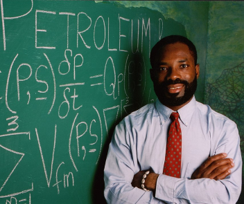

-
Main page
-
Contribute
-
Tools
-
Print/export
-
In other projects
-
Languages
Philip Emeagwali
Philip Emeagwali
is a Nigerian computer scientist
He has been living in the
United States for
many years.[1] He won the 1989 Gordon
Bell Prize ($1,000) for price-performance
in
high-performance computing applications, in an oil reservoir modeling calculation using a novel
mathematical formulation and implementation.[2][3]
Biography
Emeagwali was born in Akure, Nigeria on 23 August 1954.[4] His early schooling was suspended in
1967 as a result of the Nigerian Civil War. At 13 years, he served in the Biafran army. After
the war he completed high-school equivalence through self-study.
He is married to Dale Brown Emeagwali, a noted African-American microbiologist.[5]
Education
He traveled to the United States to study under a scholarship following completion of a
correspondence course at the University of London. He received a bachelor's degree in
mathematics from Oregon State University in 1977. He later moved to Washington DC, receiving in
1986 a master's degree from George Washington University in ocean and marine engineering, and a
second master's in applied mathematics from the University of Maryland. Next magazine suggested
that Emeagwali claimed to have further degrees.[6][7] During this time, he worked as a civil
engineer at the Bureau of Land Reclamation in Wyoming.
Court case and the denial of degree
Emeagwali studied for a Ph.D. degree from the University of Michigan from 1987 through 1991. His
thesis was not accepted by a committee of internal and external examiners and thus he was not
awarded the degree. Emeagwali filed a court challenge, stating that the decision was a violation
of his civil rights and that the university had discriminated against him in several ways
because of his race. The court challenge was dismissed, as was an appeal to the Michigan state
Court of Appeals.[8]
Supercomputing
Emeagwali received the 1989 Gordon Bell Prize for an application of the CM-2 massively-parallel
computer. The application used computational fluid dynamics for oil-reservoir modeling. He
received a prize in "price/performance" category, with a performance figure of about 400
Mflops/$1M.[15] The winner in the "performance" category, was also the winner of the
Price/performance category, but unable to receive two prizes. Mobil Research and Thinking
Machines, used the CM-2 for seismic data processing and achieved the higher ratio of 500
Mflops/$1M. The judges decided on one award per entry.[3][2] His method involved each
microprocessor communicating with six neighbors.[10]
Emeagwali's simulation was the first program to apply a pseudo-time approach to reservoir
modeling.[1]
Accolades
- Price/performance–1989 Gordon Bell Prize, IEEE ($1,000 prize)[3]
- New African "35th-greatest African (and greatest African scientist) of all time"[16]
He was cited by Bill Clinton as an example of what Nigerians can achieve when given the
opportunity[17] and is frequently featured in popular press articles for Black History
Month.[18][10]
Selected publications
- Emeagwali, P. (2003). How do we reverse the brain drain. speech given at.[19]
- Emeagwali, P.
(1997). Can Nigeria leapfrog into the information age. In World Igbo Congress. New York:
August.
External links
- emeagwali.com – Emeagwali's personal website.
- Digital Giants: Philip Emeagwali (BBC)
- Biography of Emeagwali from IEEE (Archive, as of May 26, 2009).
See also
References
- Ndiokwere, Nathaniel I. (1998). Search for Greener Pastures: Igbo and African
Experience.
Indiana University. p. 313. ISBN 978-1-575-0294-50.
- "Gordon Bell Prize Winners". www.sc2000.org. sc2000 Conference. Retrieved 2015-11-21.
- "Special Report 1989 Gordon Bell Prize". IEEE. pp. 100–104, 110. Archived from the original
on 3 February 2017. Retrieved 3 February 2017.
- African Americans in Science: Institutions. ABC-CLIO. 2008. ISBN 978-1851099986.
- Hamilton, Janice (2003). Nigeria in Pictures. Lerner Publishing Group. p. 70. ISBN
0822503735.
- Braimah, Ayodale (2017-12-31). "Philip Emeagwali (1954- ) •". Retrieved 2020-05-30.
- "Philip Emeagwali: African American Inventor". www.myblackhistory.net. Retrieved 2020-05-30.
- "Black History- Florida Agricultural and Mechanical University2020". www.famu.edu. Retrieved
2020-05-30.
- "Emeagwali's insistence on degrees muddles defence". Next. November 21, 2010. Archived from
the original on October 12, 2011.
- Gray, Madison. "Philip Emeagwali, A Calculating Move". Time Magazine. Retrieved 13 June
2015.
- "Philip Emeagwali – Nigerian British Awards". Retrieved 2020-05-29.
- "PHILIP EMEAGWALI V UNIV OF MICH BOARD OF REGENTS". Justia Law. 1999-10-29. Retrieved
2015-11-21.
- "Dr. Phillip Emeagwali born". African American Registry. Retrieved 2020-05-29.
- "How Philip Emeagwali Lied His Way To Fame". Sahara Reporters. 2012-09-24. Retrieved
2020-05-30.
- Clifford, Igbo. "Philip Emeagwali Biography, Early Life, Education, Businesses, Inventions,
Net Worth And More". Information Guide Africa. Retrieved 2020-05-29.
- "Your 100 Greatest Africans of all time", New African, August 2004 Archived July 6, 2007, at
the Wayback Machine
- Bill Clinton, Remarks to a Joint Session of the Nigerian National Assembly in Abuja, August
2000(transcript) Archived December 22, 2006, at the Wayback Machine
- "CNNfyi.com - Chasing the Dream". edition.cnn.com. Retrieved 2017-10-20.
- The reverse brain drain : Afghan-American Diaspora in post-conflict peacebuilding and
reconstruction. University of Arizona Libraries. 2003.
Contents
- Biography
- Education
- Court case and the denial of degree
- Supercomputing
- philip@7e.com.ua
- +380440000000
- Telegram: Web education
- Reference
- external links

Philip Emeagwali
Contents